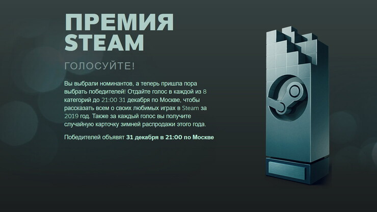

Valve запустила собственное голосование на лучшие игры 2019 года в рамках «Премии Steam». Начиная с 19 декабря, пользователи платформы могли проголосовать за полюбившиеся проекты из восьми номинаций. Уже 31 декабря Valve назвала победителей, которые получили «прекрасный трофей и вечную славу победителя премии Steam».

«Может, дело в увлекательном геймплее или в цепляющей истории. А может, дело в добротных персонажах, в безукоризненном дизайне или в затягивающей сетевой игре. Какой бы ни была причина, победитель в этой номинации мгновенно стал классикой.»
Номинанты:
«Когда речь заходит о преодолении новых барьеров, ничто не может похвастаться такими темпами развития, как виртуальная реальность. Если бы премию присуждали мы, каждый разработчик VR-игр получил бы награду за вклад в будущее иммерсивных игр, не сравнимых с другими способами выражения. Но раз уж трофей только один, то именно вы, член Комитета по отбору качественных игр, выберете лучшего из претендентов 2019 года.»
Номинанты:
«Эта игра — уже не новинка. Далеко позади осталось то время, когда разработчики впервые явили миру своё творение. Как настоящие любящие родители, они не прекращают растить и поддерживать своё дитя. И по сей день в игру добавляется что-то новенькое. »
Номинанты:
«Есть такие игры, которые не раскроются полностью, если играть в них одному. Может, будет веселее, если вашу спину будет прикрывать друг? Или подставит свою спину под ваш нож — это уж кому как нравится. Так или иначе, если вы собираетесь с друзьями, в этой игре вас ждёт дикое веселье. »
Номинанты:
«Эта игра открывает новые горизонты, удивляя нас беспрецедентными механиками и головоломными сюрпризами. Она выходит за рамки и вытаскивает вас за собой!»
Номинанты:
«Иногда просто хочется погрузиться в сюжет с головой, и эта игра производит неизгладимое впечатление. Она захватывает, как любая мыльная опера, и выверена, будто первоклассное ТВ-шоу. Брависсимо! Аплодируем игре, затронувшей душу!»
Номинанты:
«Игры способны подтолкнуть нас за пределы возможного. Словно в монтажной подборке, мы трудимся изо всех сил, тренируем быстроту и подвижность пальцев, осваиваем каждый уголок игры в течение многих недель. Прошедших испытание ждёт награда: проникновенная красота и чувство саморазвития. Главное — не выбросить монитор из окна в первый же день. »
Номинанты:
«Эти разработчики — творцы красоты. Визуальный стиль не должен стремиться к полной реалистичности и достоверности (хотя сама по себе это благородная цель)... Он описывает уникальный внешний вид и мироощущение. И эта игра демонстрирует визуальное единство и выразительность, которые не только соответствуют игровому миру, но делают реальный мир ничтожным в сравнении.»
Номинанты: